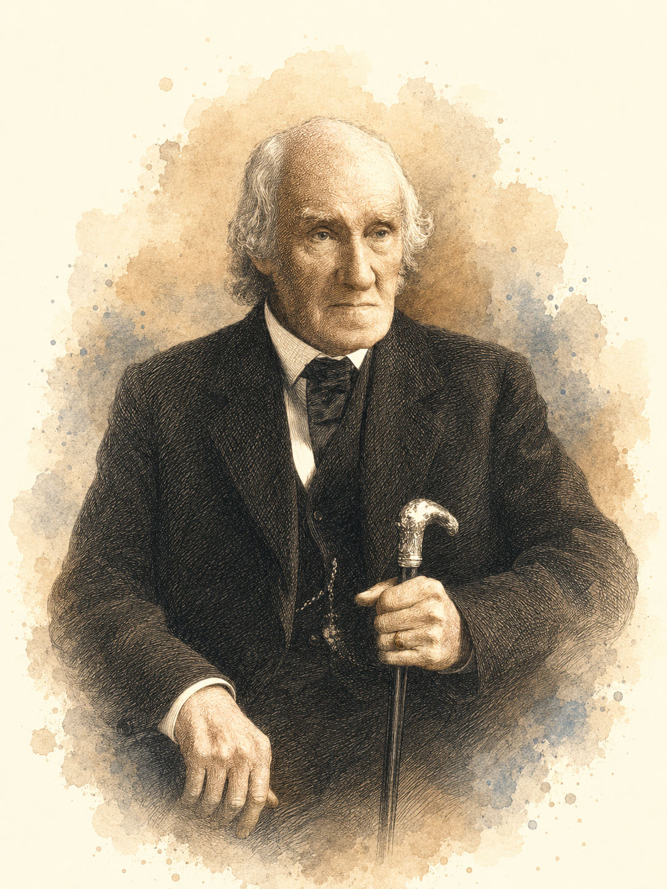

Nicholas Barry 1821–1912The patriarch of the Barry family, and a forefather of mass production.
Alice (Potts) Barry
1819–1912
Patrick BarryDates here
Mary BarryDates here
James BarryDates here
Nicholas Barry Jr.Dates here
Catherine BarryDates here
Alice Barry1922-1976
Thomas Barry1862–1941
Mary (Stockdale) Barry1862–1946
Albert Barry1886–1962
Helen BarryDates here
Mary BarryDates here
James BarryDates here
Mary (Mathiason) Barry1886–1974
Dale McGowan1907–1963
Alice Barry1922–1976
Thomas BarryDates here
Richard Sessler1948–
Mary Alice McGowan1948–
Brian LiederbackDates here
Sarah Sessler1977–
John Sessler1980–
Anil (Hurkadli) SesslerDates here
Bo Liederback2014–
Cade Liederback2014–
Mira Sessler2025–